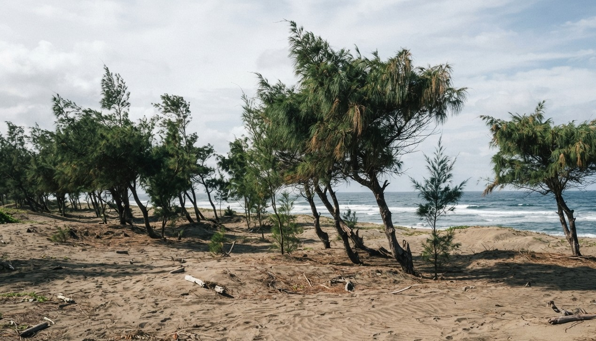

Plant Life
9,253 vascular plant species — more than 3,500 found nowhere else on Earth. From cloud forest orchids to the world's largest flower, the Philippines is a botanical wonder.

Regarded as the Queen of Philippine Orchids, the Waling-Waling blooms in the highland forests of Mindanao at elevations above 500 metres. Its large, spectacular flowers — up to 10 cm across — range from violet and white to deep rose. Once common, it is now severely threatened by overcollection and habitat loss. The Waling-Waling is the pride of Davao and a symbol of Philippine floral heritage.
The Botanical Collection
Explore the extraordinary diversity of Philippine plant life — by forest type, habitat, and conservation status.
The Queen of Philippine Orchids — a highland bloom of extraordinary beauty found only in Mindanao, now threatened by overcollection.

The Philippines hosts over 30 Nepenthes species, including the giant N. attenboroughii of Palawan's Mount Victoria. Found on ultramafic soils, they trap insects and even small vertebrates in fluid-filled pitchers.

The world's largest individual flower — up to 1 metre across. A holoparasite with no leaves, roots, or stems. It grows entirely within its host vine, emerging only to bloom.

Once the dominant tree of Philippine lowland forests — now critically threatened by decades of industrial logging.
Critically Endangered
The national tree of the Philippines — a majestic hardwood prized for its golden-yellow flowers and resilient timber. A symbol of strength and national identity.
The Philippines is home to over 1,000 orchid species. Cattleya hybrids grown in the Philippines are prized internationally for their large, fragrant blooms.

The Philippines once had 500,000 hectares of mangrove forests — now reduced by over 70%. These coastal forests are critical nurseries for reef fish and protection against typhoons.
.jpg)
Philippine seagrass meadows are the feeding grounds of the Dugong. The Philippines holds some of the most extensive seagrass habitats in Southeast Asia.
.jpg)
One of the Philippines' most valued native hardwoods, once used extensively in construction. The Molave is celebrated in poetry and culture as an enduring symbol of Filipino resilience.
Wild vanilla orchids wind through Philippine rainforest understories. Related to the commercial vanilla plant, these vines are part of the extraordinary orchid diversity of the archipelago.
Found in the nutrient-poor highland bogs of Mindanao and Palawan, Philippine Sundews trap insects with sticky glands — one of nature's most elegant carnivorous strategies.
Above 1,500 metres, the cloud forests of the Cordillera and Mount Apo are draped in mosses and lichens. Home to cloud forest specialists found nowhere else on Earth.

A tall, pine-like coastal tree found along Philippine shorelines, including the dune belt of Ilocos Norte, where its extensive roots help anchor shifting sand against the northeast monsoon.
.jpg)
The dominant pine of the Luzon tropical pine forests, growing in open stands across the Cordillera Central range — including the montane foothills of La Union's Pugo and Bagulin highlands.

Known locally as voyavoy, this Batanes palm's fibrous fronds are the traditional raw material for the Ivatan vakul rain cape, woven to shield against the islands' near-constant wind, rain, and sun.
.jpg)
One of the most widespread grasses in the Philippines, and the traditional thatching material of the Ivatan stone houses of Batanes — roofs layered nearly a metre thick and lashed down with reeds.
.jpg)
Known locally as útod, this dwarf bamboo dominates the rolling grassland zone that carpets Mount Pulag above the mossy forest line, in the protected landscape extending into Nueva Vizcaya.
Habitats
From sea level to mountain summit — the Philippines supports a complete gradient of forest ecosystems, each with its own endemic community of plants.
The richest forest type by species count. Dominated by giant dipterocarps, these forests once covered the Philippine lowlands but have been reduced to less than 10% of their original extent.

Found on the slopes of Mindanao, Luzon, and Palawan — denser, cooler, and rich with tree ferns, palms, and the endemic orchids for which the Philippines is famous.
Perpetually shrouded in mist above 1,500 metres. Trees are stunted and every surface is carpeted in mosses, liverworts, and lichens. Shelters the most isolated endemic species.

Fringing the Philippine coastline, mangrove forests are among the most productive ecosystems on Earth — nurseries for marine life and a first defence against storm surge.
Filter by plant type or click any card to view full image.